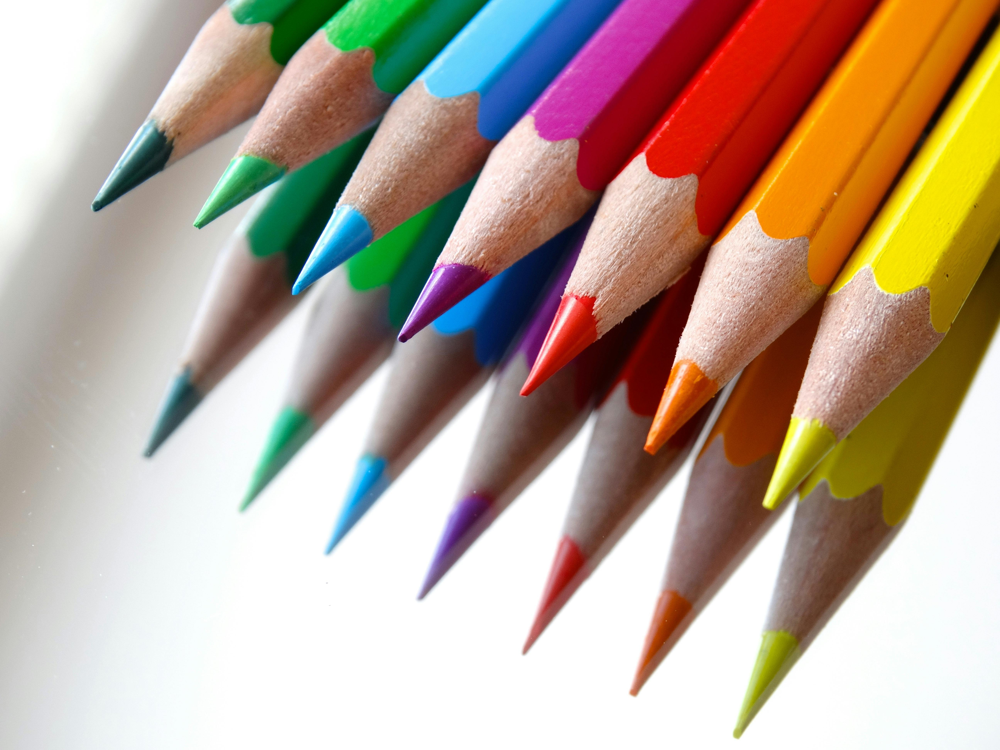
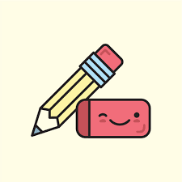
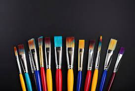

Para começar a desenhar não precisa investir em materiais caros, procure investir em linhas escolares de baixo custo. Afinal, você está começando agora e precisa procurar um material que você se sinta melhor usando. Uma caixa de lápis de cor escolares, com 12 unidades pode custar R$ 10,00. Já uma caixa de lápis de cor profissional com 12 cores pode chegar a custar R$ 200,00.
A borracha é uma ferramenta essencial para iniciantes, não só para corrigir erros, mas também como ferramenta de experimentação e criatividade. Isso permite explorar diferentes técnicas e estilos sem se preocupar em cometer erros, além de aplicar efeitos especiais aos seus desenhos. Existem muitos tipos de borrachas, cada uma adequada a necessidades específicas, o que as torna essenciais para o desenvolvimento e expressão artística. Os valores de uma borracha podem variar de R$0,60 até R$ 15,00.
Se você não gosta muito de desenhar a lápis, o pincel é uma ótima opção. Pintura à tinta é um ótimo jeito de começar a fazer arte. Esse tipo de pintura normalmente é feito em uma tela, mas isso não é obrigatório. Uma folha de papel deve ser suficiente. O preço de um pincel pode ser bem variado, podendo custar de R$2,00 até R$ 25,00, já a tinta pode custar entre R$25 ,00 até R$ 150,00, dependendo do tipo de tinta.
